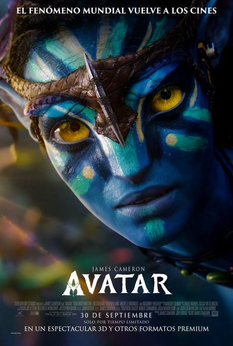

AVATAR
|  |
Entramos en el mundo Avatar de la mano de Jake Sully, un ex-Marine en silla de ruedas, que ha sido reclutado para viajar a Pandora, donde existe un mineral raro y muy preciado que puede solucionar la crisis energética existente en la Tierra. |